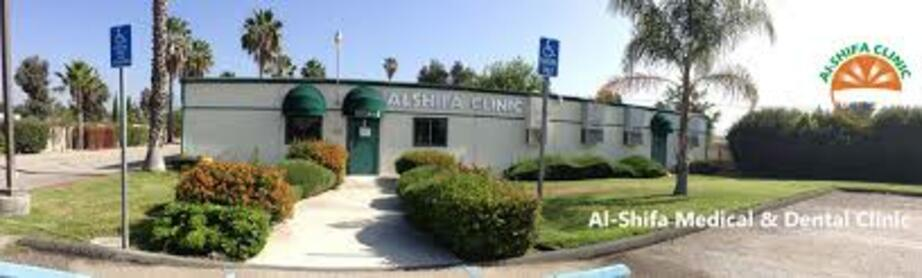
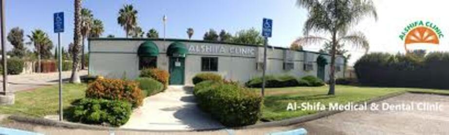
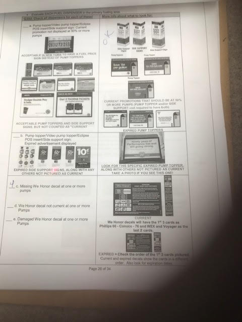
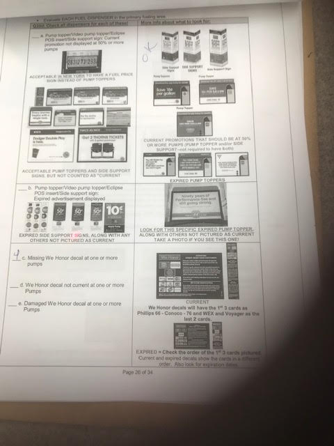
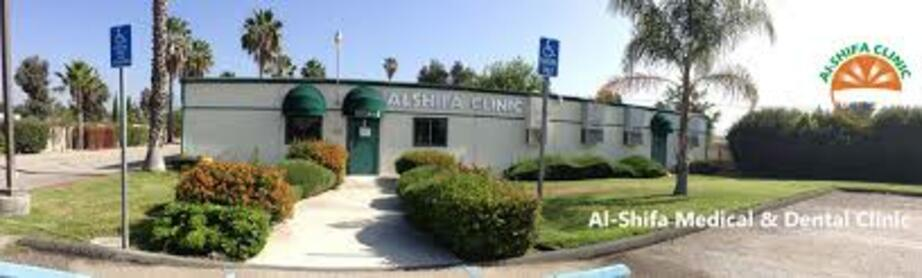
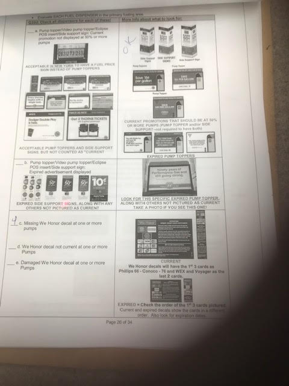
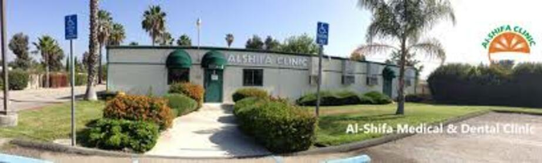
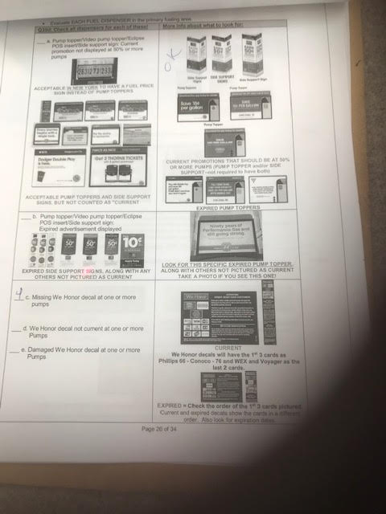

Portfolio
 



 



I am a full-time student at University of Riverside California. I am currently working on my bachelors in psychology and a minor in biology.
I am interested in pursuing a career in medicine. I hope to become a physician assistant. I try to spend most of my free time volunteering at clinics. Currently, I volunteer my time at Al-Shifa clinic. I have over 1,500 hours in volunteer experience.
I currently have two full time jobs working in customer service. Working two full time jobs and attending school full time has improved my time management and organizational skills.
Working as a Assistant manager has improved my decision making skills and working as a cashier has improved my mathematical skills. The experience I have gained from the customer service jobs and volunteering at clinics have really taught me how to be more patient and work as a team player.
I am a quick learner and love to learn new skills. I like to be the best at whatever I chose to do. I never back away from a challenge even if there is a chance for failure. Some of the best lessons and experiences come from failure. Over the years I have focused on changing my weak points. I always had a fear of public speaking and in general I was not the best at interacting with people I do not have a history with. I started putting myself in classes where I had to do presentations and work in groups. I have been able to manage my fear of public speaking.
•Responsible for paying vendors and checking in deliveries
• Responsible for placing store order and maintaining inventory
•Responsible for counting and refilling money in the safe
• Had to be available at odd hours (be on call)
• Prepare sale reports and profits for the day
• Responsible for checking out customers
• stocking inventory
• cleaning gas pumps
• Answered phones and scheduled appointments for patients
• Organized Patiemt files and Rearranged filing system
• checked patient vitals
• Shadowed doctors that were in the clinic and did rounds with them

